꽃을 찍으면 AI가 종을 판별해 도감에 모으고, 지도에 남기고,
동네 이웃끼리 시즌 랭킹으로 경쟁하는 모바일 게임
포켓몬GO의 수집 재미를 실제 자연으로 옮겼다. 몬스터 대신 우리나라에 실제로 피는 꽃 200종이고, 판별은 그림이 아니라 PlantNet AI가 사진을 보고 한다. 계절이 지나면 그 꽃은 다음 해까지 못 잡는다.
| 장르 | 위치 기반 수집 · 도감 완성 · 지역 랭킹 |
|---|---|
| 플랫폼 | Android (API 26+) — 카메라·GPS를 쓰므로 브라우저 실행은 불가하다. iOS 동시 개발 |
| AI 인식 | PlantNet k-eastern-asia(4,932종) + ML Kit 온디바이스 1차 필터 |
| 지도 | 카카오맵 SDK — 벡터 타일 · 핀 · 클러스터링 |
| 백엔드 | Supabase (Postgres + RLS + 익명 인증) |
| 규모 | main 14,789줄 + 테스트 10,084줄 · 화면 22개 중 19개 동작 · 도감 200종 |
| 테스트 | JVM 409개(33 클래스) · 계측 47개 · 돌연변이 검증 182건 |
| 개발 방식 | Claude Code · iOS/Android 터미널 2개 병행 · 진행 기록 (49)회차 |
실기는 앱을 실제로 띄워 찍은 화면이다. 설계는 카메라 하드웨어가 필요해 에뮬레이터로 담을 수 없는 구간이라 와이어프레임으로 싣는다.
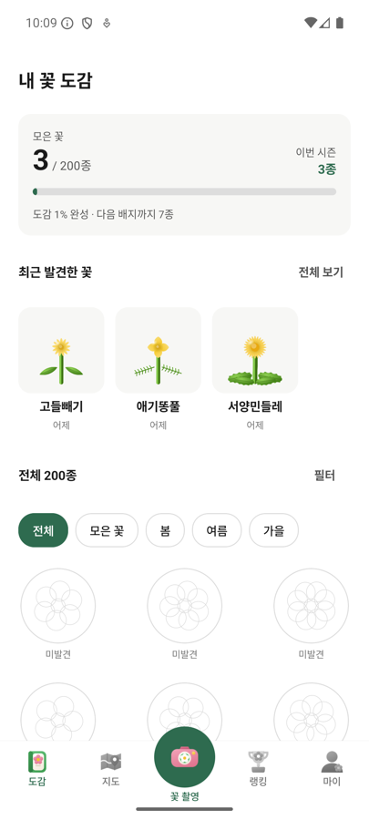
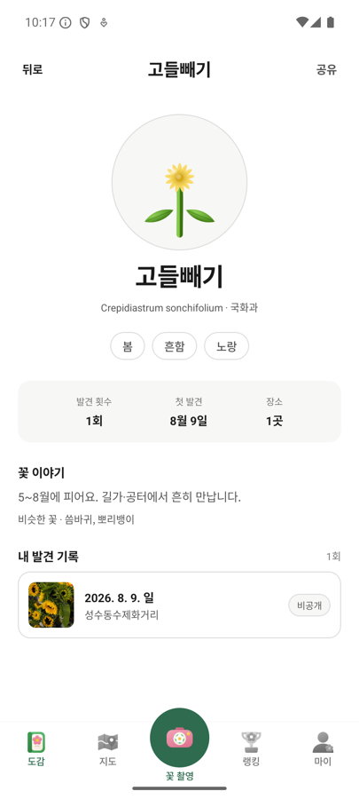
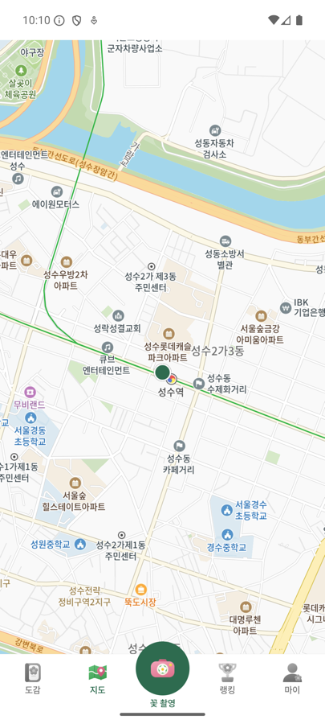
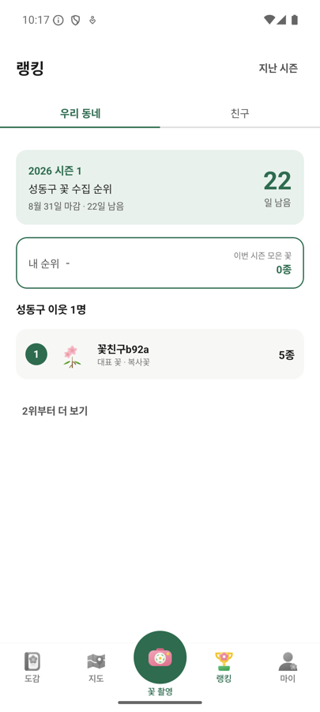
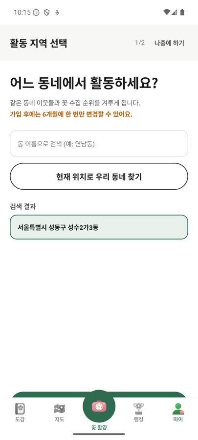
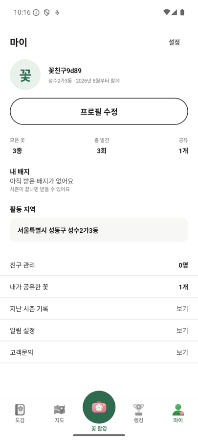
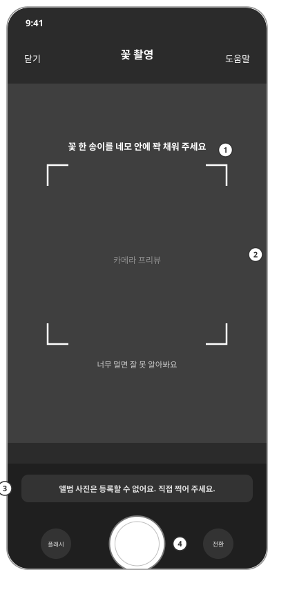
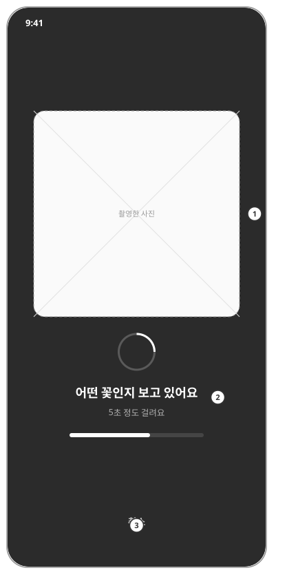
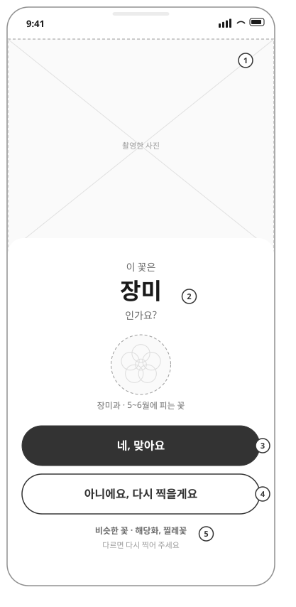
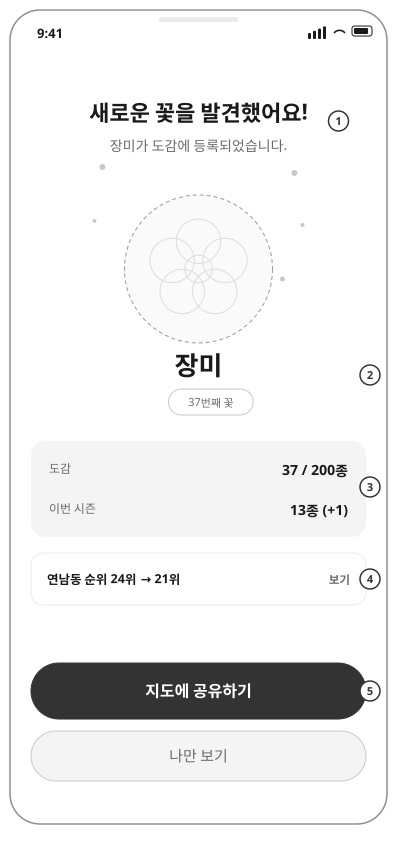
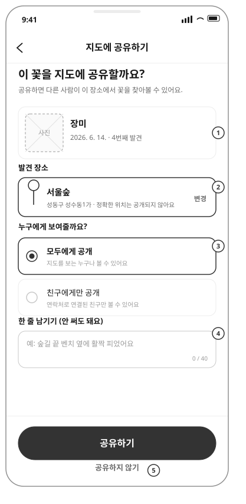
촬영 한 번이 도감 · 지도 · 랭킹 세 곳에 동시에 남는다.
기능을 늘리는 대신 틀렸는지 알 수 있게 만드는 데 시간을 썼다.
온디바이스 필터로 92.4%를 미리 걸러내고, 개화월 후보가 0개면 네트워크를 타지 않는다. 호출 직전에 로그를 남겨 어느 촬영이 과금됐는지 사후에 확인할 수 있다.
진행.md (15)(46)PlantNet 점수는 4,932종에 퍼진 확률이라 정답도 0.1 근처에 흔히 온다. 실패 임계값을 0.30으로 뒀더니 버려진 4장이 전부 정답이었다(실기기 실측). 0.05로 내려 1순위 정답률 50% → 80%가 됐다.
진행.md (43)(44)어떤 꽃인지 알 수 없었어요는 원인이 세 가지인데(API가 못 알아봄 / 도감·개화월에서 걸림 / 점수 미달)
화면에는 똑같이 보인다. 로그 네 줄로 갈라 두고 그 로그의 내용까지 테스트로 고정했다 —
로그는 조용해져도 증상이 없다.
진행.md (46)초록 249개 상태에서 앱이 죽고 화면에 null이 떠 있었다.
JVM 테스트로 원리적으로 못 재는 층을 문서화하고, 돌연변이 182건으로
검사가 실제로 빨개지는지 매번 확인했다.
진행.md (31)(38)(41)둘 중 하나면 된다.
Releases에서
catchflower-v1.0.apk를 안드로이드 폰으로 내려받아 설치한다.
설정 → 보안 → 출처를 알 수 없는 앱을 허용해야 한다.
git clone https://github.com/Aaron-HyoSan/catchflower.git
cd catchflower/android
cp local.properties.template local.properties # 키를 채운다
./gradlew :app:assembleDebug
adb install -r app/build/outputs/apk/debug/app-debug.apklocal.properties에 PlantNet·카카오·Supabase 키를 넣는다.vector/auth가 401을 주고 타일이 안 그려진다. 그래서 배포 APK는 키해시가 등록된 디버그 키로 서명했다 —
release 키로 다시 서명하면 지도만 조용히 죽는다.CN=Android Debug vs CN=CatchFlower). 나중에 Play에서 받으려면 이 APK를 먼저 지워야 하고,
지우지 않으면 설치가 실패하면서 화면에는 이유가 나오지 않는다. 도감 기록은 계정이 달라 옮겨지지 않는다.